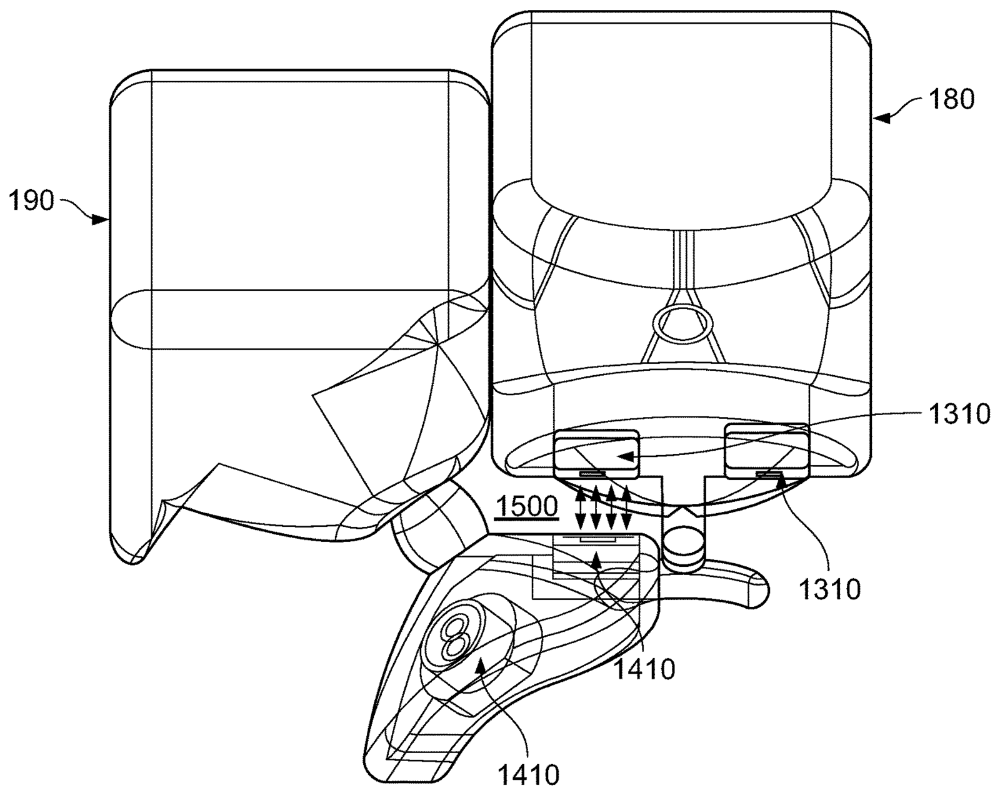
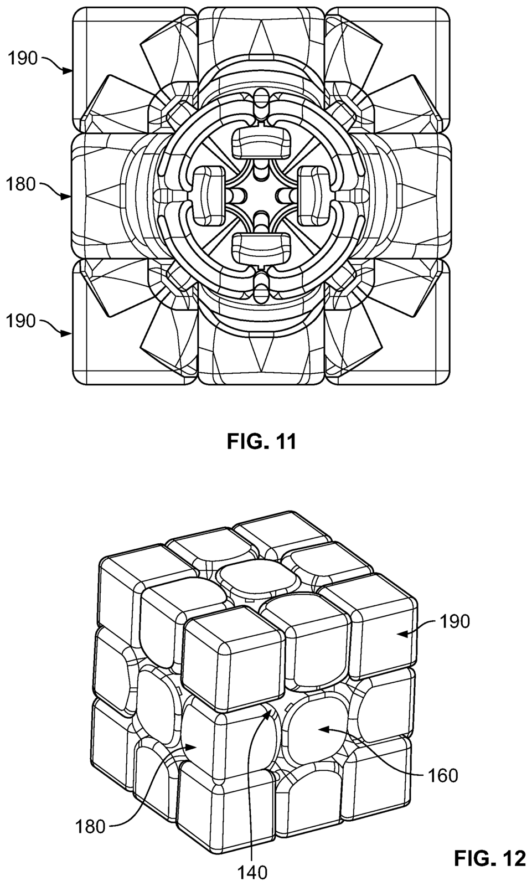

As a competitive speedcuber, I was frustrated with the current hardware on the market. The state-of-the-art cube designs all showcased magnets, which would provide a distinct "click", providing a solver control when moving at over 10 moves per second.
Magnetically Stabilized Puzzle Cube

- Documentation
- View documentation
- Role
- Inventor · Mechanical Designer
- Skills
- Mechanical Design, CAD, Kinematic Analysis, Product Engineering, Patent Writing, Tolerance Design
- Year
- 2018-2020
Process

The main issue was that each magnet was arbitrarily placed at the outer radius of each piece. As each magnet had mass, the cube would oscillate about each quarter turn as a result of the placement; these oscillations would make turning uncontrollable. The magnets would provide the user a "click'" at the cost of making it more difficult to turn. Cubers swore by this "click"; something about this psychologically made turning satisfying.
To combat this, I realized that if I brought the magnets closer to the cube's core, then I could retain the beloved "click" and make it easier to turn each side, thereby eliminating these oscillations. (Think ice skater angular momentum example; skater spins faster when he/she brings arms closer to axis). I then realized that by bringing the magnets closer to the core, the cube would turn on its own after a certain angular threshold; the magnetic attraction "rounded up" each turn!
I convinced my parents to get me the latest Prusa MK3 printer and I spent a whole week building it from the kit, fueled from the haribo gummy bears that was in the kit. I started printing cubes in my garage and I experimented with different magnet placements on each piece. I converged upon placing the magnets in the roots of the edges and the corners.
Outcome

The final design results in a puzzle cube with improved rotational stability, reduced risk of piece popping, and enhanced tactile feedback during turns. The integration of magnetic alignment elements enables more predictable layer snapping without compromising speed.
This work culminated in the successful filing and issuance of a U.S. utility patent, validating the novelty and technical merit of the design. The project demonstrates the application of mechanical design principles, kinematic constraint, and user-centered engineering to a consumer product context.
This cube design was used to help break the world record for the fastest single 3×3×3 Rubik’s Cube solve — 2.76 seconds (Teodor Zajder, GLS Big Cubes Gdańsk 2026).